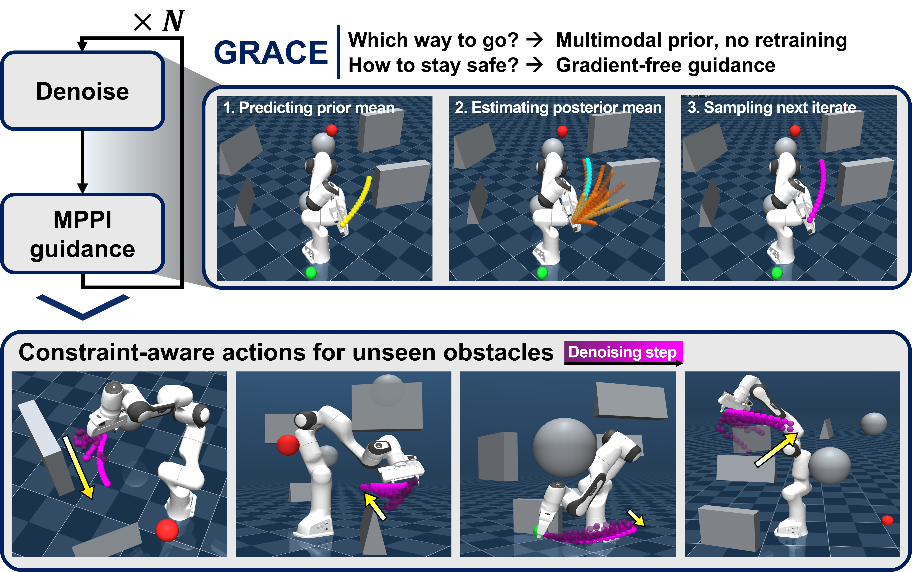

GRACE: Gradient-Free Robot Action Generation via Combined Diffusion–MPPI Posterior Estimation
Abstract
Diffusion policies generate multimodal robot action sequences from demonstrations, but steering them toward deployment-time constraints typically relies on differentiable guidance costs. This excludes many practical safety constraints, such as binary collision checks, joint limits, and black-box rollout costs, that are nondifferentiable. We propose Gradient-free Robot Action generation via Combined diffusion–MPPI posterior Estimation (GRACE), which guides a pretrained diffusion policy with Model Predictive Path Integral (MPPI) control using only forward cost evaluations. We show that the diffusion reverse step and the MPPI update share a common score-ascent structure. This lets us recast each constrained reverse step as a Bayesian posterior and approximate its mean with a single MPPI update centered at the diffusion prior mean, integrated directly into denoising rather than wrapped around it as an outer loop. Under this view, gradient guidance emerges as a special case that holds only when the cost is differentiable. GRACE thus enables constraint-aware generation without retraining the diffusion model or designing differentiable surrogates. Across simulation and real-world robot experiments, GRACE attains higher success rates and fewer safety violations than both gradient-guided diffusion policies and sampling-based planners.

Contributions
- Unifying diffusion and MPPI for guidance. The score-ascent structure shared by the two updates is exploited to integrate the sampling-based guidance of MPPI directly into the diffusion reverse step, rather than wrapping it around the model as an outer loop.
- Constraint-aware generation without gradients. Each constrained reverse step is formulated as a Bayesian posterior whose Gaussian approximation is an MPPI update centered at the diffusion prior mean, enabling guidance under nondifferentiable costs without differentiable surrogates or retraining.
- Improved success and safety. GRACE is validated in simulation and on real hardware, attaining higher success rates and fewer safety violations than gradient-guided diffusion and sampling-based baselines while preserving the multimodality of the prior.
Guided denoising in action. For a tracking rollout, we visualize how a single action sequence is refined over the reverse-diffusion process. At every denoising step, and for every action along the horizon, the video shows the diffusion prior mean proposed by the pretrained policy, the MPPI rollout samples drawn around it, the gradient-free posterior mean obtained by reweighting those samples with the constraint cost, and the sampled next iterate passed to the following step. The prior decides the overall route while the posterior correction bends it away from constraint violations, all without differentiating the cost.
Method

- Diffusion and MPPI as score ascent. The diffusion reverse mean can be written as a step that ascends the score of the noised data marginal, and the MPPI optimal update equals the prior mean plus a covariance-scaled score of the cost-induced distribution. Both advance the iterate along a scaled score, learned offline from demonstrations for diffusion and estimated online from cost rollouts for MPPI.
- Constraint-conditioned reverse posterior. We treat constraint satisfaction as a conditioning event and apply Bayes' rule to the reverse step. With a Boltzmann likelihood on the rollout cost, the posterior becomes a cost factor multiplying the Gaussian reverse kernel, the same product form as the MPPI optimal distribution but centered at the diffusion prior mean.
- Gaussian approximation via KL minimization. Because the cost contains binary, piecewise-constant terms, this posterior is non-Gaussian and intractable. We project it onto a Gaussian that keeps the diffusion reverse covariance and optimizes only the mean; KL minimization matches the posterior's first moment, a ratio of cost-weighted expectations estimated with the MPPI update centered at the prior mean.
- Decoupled guidance covariance. The denoising schedule drives the reverse covariance to zero, so rollout perturbations would vanish as the action sequence is finalized. We instead draw rollouts from a separate guidance covariance and importance-reweight them, setting the exploration scale independently of the schedule.
- Gradient guidance as a special case. Linearizing the task log-likelihood around the prior mean collapses the correction to a single analytic gradient direction, exactly classical gradient guidance, which requires differentiating both the cost and the dynamics. GRACE makes no such assumption and estimates the posterior mean from forward rollouts, extending the same update to nondifferentiable costs.
Simulation Experiments
Point-Mass Navigation
A planar point mass must reach a goal in a cluttered map, where additional obstacles absent during training appear only at inference time. A trial succeeds if the point mass reaches the goal without collision or timeout.
GRACE navigating around unseen obstacles in the point-mass task.

GRACE preserves the multimodality of the prior, producing several distinct detours, while biasing it toward lower-cost, constraint-satisfying paths instead of collapsing onto a single route.
| Method | Success [%] | Collision Fail | Path Length [m] |
|---|---|---|---|
| CEM | 8/30 (26.7%) | 0/30 | 1.247 |
| MPPI | 8/30 (26.7%) | 0/30 | 1.241 |
| DA-MPPI | 8/30 (26.7%) | 0/30 | 1.233 |
| PO-DP | 18/30 (60.0%) | 12/30 | 2.657 |
| GG-DP | 18/30 (60.0%) | 12/30 | 2.302 |
| GRACE (CNN) | 20/30 (66.7%) | 0/30 | 3.681 |
| GRACE (UNet) | 25/30 (83.3%) | 2/30 | 3.372 |
Manipulator Tracking
A 7-DoF Franka Research 3 (FR3) manipulator must reach goal joint configurations among randomly placed 3D obstacles, satisfying obstacle, self-collision, floor-contact, and joint-limit constraints, all introduced only at inference time. A trial succeeds if the target is reached without any safety violation or timeout.
GRACE reaching the target while satisfying all safety constraints in simulation.
| Method | Success [%] | Computation Time [ms] | Guidance Time [ms] |
|---|---|---|---|
| CEM | 24/30 (80.0%) | 153.45 | — |
| MPPI | 23/30 (76.7%) | 29.88 | — |
| DA-MPPI | 23/30 (76.7%) | 154.22 | — |
| PO-DP | 11/30 (36.7%) | 647.30 | 220.01 |
| GG-DP | 15/30 (50.0%) | 671.59 | 244.72 |
| GRACE (CNN) | 27/30 (90.0%) | 179.23 | 90.53 |
| GRACE (UNet) | 27/30 (90.0%) | 497.64 | 85.88 |
GRACE reaches the best success rate, 90.0% for both backbones, with no violation of self-collision, floor-contact, or joint-limit constraints, and does so at a lower guidance cost than the gradient-guided diffusion policies. Because gradient guidance merges all safety penalties into a single update direction, it leaves some constraints unsatisfied and scatters failures across every mode; GRACE instead reweights complete rollouts toward lower total cost and avoids these failures.
Real-World Experiments
We deploy GRACE on a physical 7-DoF FR3 manipulator using the same diffusion prior and guidance procedure as in simulation, without any retraining or fine-tuning. Obstacles are placed in the workspace and all collision avoidance is supplied online through the gradient-free guidance term.
Real-world deployment, scenario 1.
Real-world deployment, scenario 2.
Real-world success rate: GRACE vs. a standard diffusion policy.
| Method | Success Rate |
|---|---|
| Diffusion Policy | TBD |
| GRACE (Ours) | TBD |
BibTeX
@article{anonymous2026grace,
title={GRACE: Gradient-Free Robot Action Generation via Combined Diffusion-MPPI Posterior Estimation},
author={Anonymous Authors},
journal={IEEE Robotics and Automation Letters (RA-L)},
note={Submitted},
year={2026},
url={https://anonymous.4open.science/w/grace-70BB/}
}